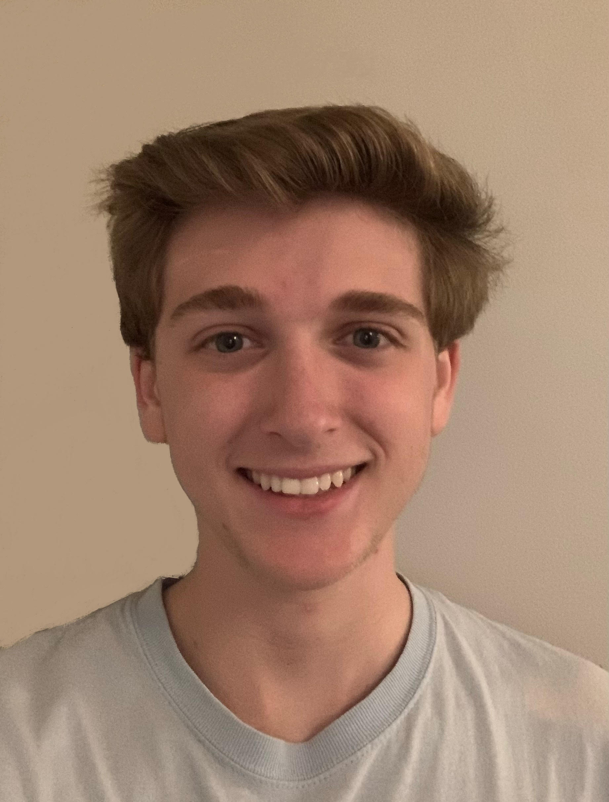

 Thomas M. Rosselli II
Thomas Rosselli
February 7, 2003
Virginia Tech - Third Year
Computer Science Major
February 7, 2003
Virginia Tech - Third Year
Computer Science Major
More About Me
Hi there! I'm Tommy, a third-year Computer Science major with a passion for technology and design. With experience in hardware troubleshooting, PC building, and web design, I've developed a keen eye for detail and a knack for solving technical challenges.
Beyond my studies, I'm fascinated by the possibilities of immersive experiences, game development, and machine learning. Whether it's creating captivating user interfaces or delving into the world of AI, I'm always eager to explore new technologies and push the boundaries of what's possible.
Outside of the tech realm, you'll often find me in the kitchen experimenting with new recipes, diving into coding projects, or immersing myself in the latest gaming releases.
I also have a love for staying active, whether it's hitting the gym, walking my dog, or enjoying the adrenaline rush of F1 racing.
As an extroverted individual, I thrive in collaborative environments and am on the lookout for opportunities that allow me to combine my technical skills with my creative interests.
If you're seeking someone who's passionate about technology, design, and innovation, I'd love to connect! Thank you for visiting my site!
Much love,
-TR2
Hi there! I'm Tommy, a third-year Computer Science major with a passion for technology and design. With experience in hardware troubleshooting, PC building, and web design, I've developed a keen eye for detail and a knack for solving technical challenges.
Beyond my studies, I'm fascinated by the possibilities of immersive experiences, game development, and machine learning. Whether it's creating captivating user interfaces or delving into the world of AI, I'm always eager to explore new technologies and push the boundaries of what's possible.
Outside of the tech realm, you'll often find me in the kitchen experimenting with new recipes, diving into coding projects, or immersing myself in the latest gaming releases.
I also have a love for staying active, whether it's hitting the gym, walking my dog, or enjoying the adrenaline rush of F1 racing.
As an extroverted individual, I thrive in collaborative environments and am on the lookout for opportunities that allow me to combine my technical skills with my creative interests.
If you're seeking someone who's passionate about technology, design, and innovation, I'd love to connect! Thank you for visiting my site!
Much love,
-TR2